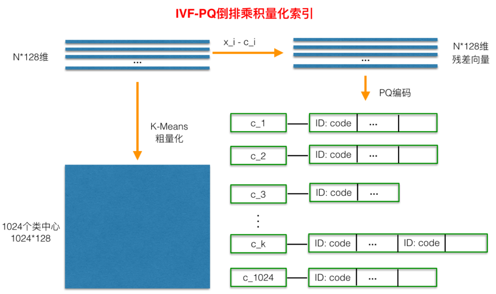

近似检索
近似检索概念
- 向量检索 (给定一个 M x d 的query, 在 N x d 的向量中检索结果)
- 精确检索
- 线性查找（暴力检索） 检索时间复杂度是 O(Nd)
- 近似检索
- 所谓近似检索，就是通过聚类、降维或者编码等方式，将原来需要在整个高维向量空间内的搜索，转换为在小范围空间或者相对低维的向量空间内搜索的算法。
- 近似检索的算法通常分为以下几种(来源)：
- 基于树的搜索算法；
- 基于哈希的空间划分法；
- 向量量化的编码算法；
- 基于图的搜索方法。
- 精确检索
近似检索工具
近似检索算法介绍
基于树的检索算法
- KD-tree/R-Tree/BK-tree/M-tree
- 维度过高时（20）性能退化/维度灾难
基于树的搜索方法通常根据向量的分布特征采用一系列的超平面将高维向量空间划分为多个子空间，并采用树型结构维护空间划分的层次关系。树中的每一个非叶子节点对应于一个子空间和一组超平面。超平面将该节点的子空间进一步划分为更小的子空间，每一个子空间与该节点的一个孩子节点相对应。由此，树中的根节点对应的是完整的向量空间，除根节点之外的每一个节点均对应于其父节点空间被划分后得到的一个子空间。而每个叶子节点对应于一个不可再分的子空间。依据上述规则，对于向量集合中的各个向量都可以找到树中的一个叶子节点与之对应。在向量搜索的过程中，可通过树型结构快速的搜索到若干个距离目标向量较近的叶子节点。通过依次计算目标向量与上述叶子节点所对应各向量的距离即可近似得到与目标向量最相似的向量。
采用基于树的搜索方法可以快速的定位到与目标向量最为相似的若干个叶子节点，从而有效地避免了很多无效比对，提高了搜索效率。然而，随着向量维度的提高，计算用于划分空间的超平面的开销将显著增大，从而影响树型结构的构建效率。此外，如果目标向量与某一超平面距离较近，该方法的搜索结果可能会丢失大量的与目标相似的向量，从而影响查询的准确度。
基于哈希的空间划分法
基于哈希的搜索方法采用一组局部敏感哈希函数对向量集合进行划分。通过采用局部敏感哈希函数可以对每一个向量计算出一个与之相对应的哈希值。对于距离较接近的向量，其哈希值也较为接近。该方法将各局部敏感哈希函数的值域划分为若干个区间，从而每个向量相应于特定的局部敏感哈希函数，均有一个区间与之对应。该方法通过哈希值的区间对向量进行划分，若两向量对于任一哈希函数其哈希值所在的区间均相同，则这两个向量属于同一分类。在搜索时，通过相同的局部敏感哈希函数和区间划分方法可以计算得到目标向量所属分类。然后可依次计算该分类以及该分类的邻近分类中所有向量与目标向量的距离获取距离最小的向量。
基于哈希的方法，通过计算目标向量所在分类以及邻近的分类可以有效的排除掉大量与目标向量相似度较低的向量，减少了向量相似度的计算次数。但是，该方法通常只能对向量空间进行均匀划分，而实际应用中向量在空间中的分布通常是不均匀的，从而导致各个分类中向量的数量相差巨大，并进一步影响搜索的效率和准确度。
LSH 算法
Local Sensitive Hashing，局部敏感哈希，我们可以把向量通过平面分割做 hash。如下图所示，0 表示点在平面的左侧，1 表示点在平面的右侧，确定多个分割平面，然后对向量进行多次hash，可以看到 hash 值相同的点都比较靠近，所以在 hash 之后，我们只需要计算 hash 值类似的向量，就能较准确地召回 topK。

局部敏感
当一个函数（或者更准确的说，哈希函数家族）具有如下属性的时候，我们说该哈希函数是局部敏感的：相似的样本点对比相远的样本点对更容易发生碰撞。
哈希如何加速查找
对于 Brute Force 搜索，需要遍历数据集中的所有点，而使用哈希，我们首先找到查询样本落入在哪个 cell（即所谓的桶）中，如果空间的划分是在我们想要的相似性度量下进行分割的，则查询样本的最近邻将极有可能落在查询样本的 cell 中，如此我们只需要在当前的 cell 中遍历比较，而不用在所有的数据集中进行遍历。
多表哈希
对于单表哈希，当哈希函数数目 K 取得太大，查询样本与其对应的最近邻落入同一个桶中的可能性会变得很微弱，针对这个问题，我们可以重复这个过程 L 次，从而增加最近邻的召回率。这个重复 L 次的过程，可以转化为构建 L 个哈希表，这样在给定查询样本时，我们可以找到 L 个哈希桶（每个表找到一个哈希桶），然后我们在这 L 个哈希表中进行遍历。这个过程相当于构建了 K*L 个哈希函数（注意是相当，不要做等价理解）。
K 和哈希表数目 L 如何选取
哈希函数数目 K 如果设置得过小，会导致每一个哈希桶中容纳了太多的数据点，从而增加了查询响应的时间；而当 K 设置得过大时，会使得落入每个哈希桶中的数据点变小，而为了增加召回率，我们需要增加 L 以便构建更多的哈希表，但是哈希表数目的增加会导致更多的内存消耗，并且也使得我们需要计算更多的哈希函数，同样会增加查询相应时间。通过选取合理的 K 和 L，我们可以获得比线性扫描极大的性能提升。
Multiprobe LSH
多 probe LSH 主要是为了提高查找准确率而引入的一种策略。首先解释一下什么是 Multiprobe。对于构建的L个哈希表，我们在每一个哈希表中找到查询样本落入的哈希桶，然后再在这个哈希桶中做遍历，而 Multiprobe 指的是我们不止在查询样本所在的哈希桶中遍历，还会找到其他的一些哈希桶，然后这些找到的T个哈希桶中进行遍历。这些其他哈希桶的选取准则是：跟查询样本所在的哈希桶邻近的哈希桶，“邻近”指的是汉明距离度量下的邻近。
通常，如果不使用 Multiprobe，我们需要的哈希表数目L在 100 到 1000 之间，在处理大数据集的时候，其空间的消耗会非常的高，幸运地是，因为有了上面的 Multiprobe 的策略，LSH 在任意一个哈希表中查找到最近邻的概率变得更高，从而使得我们能到减少哈希表的构建数目。
综上，对于 LSH，涉及到的主要的参数有三个：
- L:哈希表（每一个哈希表有K个哈希函数）的数目
- K:每一个哈希表的哈希函数（空间划分）数目
- T: 近邻哈希桶的数目，即 the number of probes
这三个设置参数可以按照如下顺序进行：首先，根据可使用的内存大小选取L，然后在K和T之间做出折中：哈希函数数目K越大，相应地，近邻哈希桶的数目的数目 T也应该设置得比较大，反之K越小，L也可以相应的减小。获取K和L最优值的方式可以按照如下方式进行：对于每个固定的K，如果在查询样本集上获得了我们想要的精度，则此时 T的值即为合理的值。在对T进行调参的时候，我们不需要重新构建哈希表，甚至我们还可以采用二分搜索的方式来加快T$ 参数的选取过程。
向量量化的编码算法（Quatization）
基于向量量化的方法通常采用聚类的方式对向量集合中的向量进行划分。该方法通过 k-means 等聚类方法将向量集合划分为多个聚类，并记录各个聚类的中心点的坐标。在向量搜索时，首先依次比对目标向量与各个聚类中心的距离，选择出与目标向量最为接近的若干个聚类中心。接下来获取这些聚类中心所对应聚类中的所有向量，依次计算各向量与目标向量的距离，选择出距离最为接近的若干个向量。
该方法采用聚类的方法将数据集合划分，从而在搜索过程中排除掉与目标向量相似度较低的向量。然而，该方法在高维向量的搜索中容易遗漏部分潜在的与目标向量距离较近的向量，从而难以达到较高的准确度。
Scalar Quantization（线性量化）
- 就是我们常说的把float32量化到int8（是一个range 缩放的过程）
- 现象：特征每一维只用了 -20~20 很小部分的值，float32存在很大冗余
- 方案：在分布范围(-20~20)内均匀找254个点，把一维的float32值量化为 int8(-127~127)
- 量化误差：float32与254个数中的最小距离
倒排索引- IVF(inverted index/file)
- IVF索引用来优化遍历比
- 没遍历到会导致掉点
- 一般选取遍历比为 1/16
- nlist
- nprobe
Product Quantization
- 对称距离（速度快） vs 非对称距离（精度高）
- pq 检索过程
- 对于一个底库 ，计算与 q 的距离， 先做解码求出近似feature再算L2
- 对于很多个底库，我们发现他们都需要先从 PQ_table 中取出一段近似feature然后与q做L2
- 我们做一个预处理，先让 q 和 PQ_table 算好各个段的L2距离，得到距离表Query_table
- 然后对于每一个底库进行查表求得每一段的L2距离，32段距离相加就是整体的距离！
基于图的搜索方法
HNSW(Hierarchcal Navigable Small World graphs)
- 来自Efficient and robust approximate nearest neighbor search using Hierarchical Navigable Small World graphs
- 维护图的结构，根据图的连接边进行快速查找
- 内存开销大（为了维护图结构）
- 构图过程
- 构图过程非常简单，逐个插入点，找到M个最近邻点， 插入双向边。这个过程会引入highway, 因为一开始的最近邻不一定是最终的最近邻点
- 插入构图的时候，先计算这个点可以深入到第几层，在每层的NSW图中查找t个最紧邻点，分别连接它们，对每层图都进行如此操作
- 向上节点数依次减少，遵循指数衰减概率分布
IVFPQ
- 
IVFPQ-HNSW
- 使用HNSW改善IVF
- IVF是nlist越高精度越好，但是会导致时间成倍增加。HNSW可以显著降低时间开销
- HNSW可以提升nlist数目 (从4096增大到32768)，同时速度不降低
- 提升nlist数目可以提高IVF精度，因此可以降低遍历比(从6.25%降低到1.55%)，速度加快
Rerank
- IVFPQ/HNSW 得到topk 之后对topk 进行暴力排序
- 提高top1 命中率
- 底库越大，内存开销越大
- 可以在int8 的基础上进行，降低内存开销
reference
- https://chasingegg.github.io/2019/08/26/HNSW/
- https://www.twblogs.net/a/5c47f48fbd9eee35b21f0c93/?lang=zh-cn
- https://zhuanlan.zhihu.com/p/80552211
- https://arxiv.org/pdf/1603.09320.pdf
- https://yongyuan.name/blog/vector-ann-search.html
- https://www.6aiq.com/article/1587522027341
- https://milvus.io/cn/docs/v0.8.0/about_milvus/index_method.md